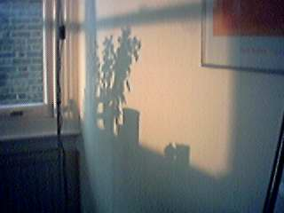

We decided to go for a Sunday afternoon stroll, and headed off to Runnymede. We had a walk along the riverbank but couldn't go very far as that would have involved walking across farm land and there were notices asking us not to do so because of the Foot and Mouth epidemic in England at the moment.
When we got back to the flat, the sun was shining a little and I got the following picture of the shadows against the wall.
|  |